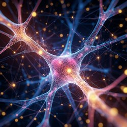

Нейросети: будущее уже здесь
Статья составлена в начале 2025 года. Следите за развитием технологий, чтобы не упустить новые достижения.
Нейросети — это мощный инструмент, который уже сегодня меняет нашу жизнь. Они распознают лица на фотографиях, переводят тексты, создают музыку и даже пишут тексты. Все это возможно благодаря алгоритмам, вдохновлённым работой биологических нейронов.
Что такое нейросети?
Нейросеть состоит из множества взаимосвязанных узлов — «нейронов» — сгруппированных в слои. Каждый нейрон получает входные данные, обрабатывает их с учётом весов и передаёт результат дальше. Так сети учатся распознавать сложные паттерны, постепенно корректируя веса в процессе обучения.
Краткая история развития
1960–1990-е: первые чат-боты
ELIZA (1966) и Parry (1972) имитировали разговор на основе шаблонов, демонстрируя возможности компьютерного языка.
1990–2000-е: шаблонные системы
ALICE и AIML-боты работали по заранее заданным сценариям, открыв путь к коммерческим чат-ботам.
2010-е: нейронные сети
- Word2Vec (2013): семантические векторы слов.
- Seq2Seq (2014): модели перевода и генерации текста.
2017–2025: Transformer и GPT
Архитектура Transformer и модели семейства GPT делают генерацию текста и понимание языка более точными и масштабируемыми.
Применение нейросетей
Медицина
Алгоритмы анализируют снимки и помогают диагностировать заболевания на ранних стадиях.
Технологии
Голосовые помощники и автопилоты используют нейросети для распознавания речи и принятия решений.
Творчество
DALL-E создаёт изображения по описаниям, а другие модели пишут музыку и тексты на заданную тему.
Образование
Системы адаптивного обучения подстраивают тренировки и проверку знаний под каждого студента.
Будущее нейросетей
- Мультимодальные модели (текст + изображения + видео).
- Персонализированные помощники с «памятью».
- Explainable AI для прозрачности решений.